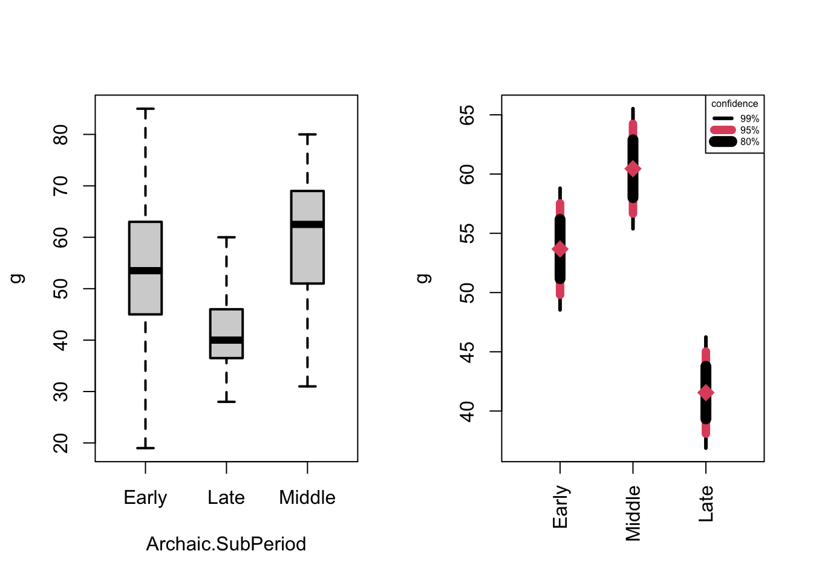

13 Comparing Means of More Than Two Samples (Ch. 13)
The data for Drennan’s Ch.13 examples can be found in ArchaicPts.csv.
## 'data.frame': 127 obs. of 2 variables:
## $ Wgt : int 54 39 49 65 54 83 75 45 68 47 ...
## $ Archaic: chr "Early" "Early" "Early" "Early" ...colnames(ArchaicPts)[2] <- "Archaic.SubPeriod" #useful to rename this column something more intuitive
ArchaicPts$Archaic.SubPeriod <- factor(ArchaicPts$Archaic.SubPeriod) Once we remove the extraneous leading column of row numbers (by [,-1], for instance), this matches Table 13.1.
13.1 Comparison with Estimated Means and Error Ranges
We can use by() to break ArchaicPts by period, summarizing each one.
## ArchaicPts$Archaic.SubPeriod: Early
## Wgt Archaic.SubPeriod
## Min. :19.00 Early :58
## 1st Qu.:45.50 Late : 0
## Median :53.50 Middle: 0
## Mean :53.67
## 3rd Qu.:62.75
## Max. :85.00
## ------------------------------------------------------------
## ArchaicPts$Archaic.SubPeriod: Late
## Wgt Archaic.SubPeriod
## Min. :28.00 Early : 0
## 1st Qu.:36.50 Late :27
## Median :40.00 Middle: 0
## Mean :41.56
## 3rd Qu.:46.00
## Max. :60.00
## ------------------------------------------------------------
## ArchaicPts$Archaic.SubPeriod: Middle
## Wgt Archaic.SubPeriod
## Min. :31.00 Early : 0
## 1st Qu.:51.25 Late : 0
## Median :62.50 Middle:42
## Mean :60.45
## 3rd Qu.:69.00
## Max. :80.00#if you want more than summary() returns, try psych::desribeBy()
describeBy(ArchaicPts, group = ArchaicPts$Archaic.SubPeriod)##
## Descriptive statistics by group
## group: Early
## vars n mean sd median trimmed mad min max range skew
## Wgt 1 58 53.67 14.67 53.5 54.08 12.6 19 85 66 -0.23
## Archaic.SubPeriod 2 58 1.00 0.00 1.0 1.00 0.0 1 1 0 NaN
## kurtosis se
## Wgt -0.08 1.93
## Archaic.SubPeriod NaN 0.00
## ------------------------------------------------------------
## group: Late
## vars n mean sd median trimmed mad min max range skew
## Wgt 1 27 41.56 8.76 40 41.04 7.41 28 60 32 0.66
## Archaic.SubPeriod 2 27 2.00 0.00 2 2.00 0.00 2 2 0 NaN
## kurtosis se
## Wgt -0.55 1.69
## Archaic.SubPeriod NaN 0.00
## ------------------------------------------------------------
## group: Middle
## vars n mean sd median trimmed mad min max range skew
## Wgt 1 42 60.45 12.15 62.5 61.18 11.86 31 80 49 -0.54
## Archaic.SubPeriod 2 42 3.00 0.00 3.0 3.00 0.00 3 3 0 NaN
## kurtosis se
## Wgt -0.34 1.88
## Archaic.SubPeriod NaN 0.00If you are keen to recreate Table 13.2 specifically, you can use c() to create vectors of sample size, mean, standard deviation, standard error, and variance for ArchaicPts, and then cbind() to build a table.
#for All Archaic combined:
allArchaic <- c(round(length(ArchaicPts$Wgt),0), round(mean(ArchaicPts$Wgt),2),
round(sd(ArchaicPts$Wgt),2),
round(sd(ArchaicPts$Wgt)/sqrt(length(ArchaicPts$Wgt)),2),
round(sd(ArchaicPts$Wgt)^2,2))
#in order to do this with by(), build a function that builds this vector
num.indexes <- function(x) {c(round(length(x),0), round(mean(x),2), round(sd(x),2),
round(sd(x)/sqrt(length(x)),2), round(sd(x)^2,2))}
Table13.2_prelim <- aggregate(Wgt ~ Archaic.SubPeriod, data=ArchaicPts, num.indexes)
Table13.2 <- cbind(Table13.2_prelim$Wgt[1,], Table13.2_prelim$Wgt[2,], Table13.2_prelim$Wgt[3,])
Table13.2 <- cbind(Table13.2[,c(1,3,2)], allArchaic)
colnames(Table13.2) <- c("Early", "Middle", "Late", "All")
rownames(Table13.2) <- c("n", "mean", "s", "SE", "s^2")
kable(Table13.2) %>% kableExtra::kable_classic(full_width = F)| Early | Middle | Late | All | |
|---|---|---|---|---|
| n | 58.00 | 42.00 | 27.00 | 127.00 |
| mean | 53.67 | 60.45 | 41.56 | 53.34 |
| s | 14.67 | 12.15 | 8.76 | 14.42 |
| SE | 1.93 | 1.88 | 1.69 | 1.28 |
| s^2 | 215.31 | 147.67 | 76.72 | 207.96 |
Figure 13.1 can be produced as Fig 12.1 was in the previous chapter. First we’ll check the stem-and-leaf plots to get a sense of the shape of each batch. Once we’ve examined the stem-and-leaf plots, we can produce a boxplot and a bulletplot of the weights of the Archaic points by sub-period.
## 1 | 2: represents 12
## leaf unit: 1
## n: 58
## 1 1. | 9
## 3 2* | 14
## 5 2. | 78
## 6 3* | 0
## 7 3. | 9
## 13 4* | 002334
## 20 4. | 5577899
## (12) 5* | 000012223444
## 26 5. | 6788899
## 19 6* | 001234
## 13 6. | 578889
## 7 7* | 03
## 5 7. | 569
## 2 8* | 3
## 1 8. | 5
## 1 | 2: represents 12
## leaf unit: 1
## n: 27
## 1 2. | 8
## 6 3* | 11244
## 13 3. | 6777789
## (5) 4* | 00014
## 9 4. | 5578
## 5 5* | 04
## 3 5. | 89
## 1 6* | 0
## 1 | 2: represents 12
## leaf unit: 1
## n: 42
## 2 3* | 12
## 3. |
## 5 4* | 024
## 7 4. | 69
## 13 5* | 111124
## 18 5. | 67999
## (7) 6* | 1123344
## 17 6. | 5578999
## 10 7* | 001334
## 4 7. | 888
## 1 8* | 0## ArchaicPts$Archaic.SubPeriod: Early
## $info
## [1] "1 | 2: represents 12" " leaf unit: 1" " n: 58"
##
## $display
## [1] " 1 1. | 9" " 3 2* | 14"
## [3] " 5 2. | 78" " 6 3* | 0"
## [5] " 7 3. | 9" " 13 4* | 002334"
## [7] " 20 4. | 5577899" " (12) 5* | 000012223444"
## [9] " 26 5. | 6788899" " 19 6* | 001234"
## [11] " 13 6. | 578889" " 7 7* | 03"
## [13] " 5 7. | 569" " 2 8* | 3"
## [15] " 1 8. | 5"
##
## $depths
## [1] " " " 1 " " 3 " " 5 " " 6 " " 7 " " 13 " " 20 "
## [9] " (12)" " 26 " " 19 " " 13 " " 7 " " 5 " " 2 " " 1 "
## [17] " "
##
## $stem
## [1] " 1*" " 1." " 2*" " 2." " 3*" " 3." " 4*" " 4." " 5*" " 5."
## [11] " 6*" " 6." " 7*" " 7." " 8*" " 8." " 9*"
##
## $leaves
## [1] "| " "| 9" "| 14" "| 78"
## [5] "| 0" "| 9" "| 002334" "| 5577899"
## [9] "| 000012223444" "| 6788899" "| 001234" "| 578889"
## [13] "| 03" "| 569" "| 3" "| 5"
## [17] "| "
##
## ------------------------------------------------------------
## ArchaicPts$Archaic.SubPeriod: Late
## $info
## [1] "1 | 2: represents 12" " leaf unit: 1" " n: 27"
##
## $display
## [1] " 1 2. | 8" " 6 3* | 11244" " 13 3. | 6777789"
## [4] " (5) 4* | 00014" " 9 4. | 5578" " 5 5* | 04"
## [7] " 3 5. | 89" " 1 6* | 0"
##
## $depths
## [1] " " " 1 " " 6 " " 13 " " (5)" " 9 " " 5 " " 3 " " 1 "
##
## $stem
## [1] " 2*" " 2." " 3*" " 3." " 4*" " 4." " 5*" " 5." " 6*"
##
## $leaves
## [1] "| " "| 8" "| 11244" "| 6777789" "| 00014" "| 5578"
## [7] "| 04" "| 89" "| 0"
##
## ------------------------------------------------------------
## ArchaicPts$Archaic.SubPeriod: Middle
## $info
## [1] "1 | 2: represents 12" " leaf unit: 1" " n: 42"
##
## $display
## [1] " 2 3* | 12" " 3. | " " 5 4* | 024"
## [4] " 7 4. | 69" " 13 5* | 111124" " 18 5. | 67999"
## [7] " (7) 6* | 1123344" " 17 6. | 5578999" " 10 7* | 001334"
## [10] " 4 7. | 888" " 1 8* | 0"
##
## $depths
## [1] " 2 " " " " 5 " " 7 " " 13 " " 18 " " (7)" " 17 " " 10 "
## [10] " 4 " " 1 "
##
## $stem
## [1] " 3*" " 3." " 4*" " 4." " 5*" " 5." " 6*" " 6." " 7*" " 7."
## [11] " 8*"
##
## $leaves
## [1] "| 12" "| " "| 024" "| 69" "| 111124" "| 67999"
## [7] "| 1123344" "| 5578999" "| 001334" "| 888" "| 0"boxplot(Wgt~Archaic.SubPeriod, data=ArchaicPts, lwd=2, notch=F, boxwex=.4,
main="Archaic Projectile Point Weights by sub-Period", ylab="g")
We’ll rebuild the ciDat function that we used in Ch.12, and use it to plot three bullets rather than two.
ciDat <- function(x, ci=c(.99, .95, .80)){
#return boundaries for requested CIs
meanX <- mean(x)
sdX <- sd(x)
nX <- length(x)
seX <- sdX/sqrt(nX) #standard error
t <- qt((ci+1)/2, df=nX-1)
low <- meanX - (seX*t) #lower boundaries
high <- meanX + (seX*t) #upper boundaries
return(rbind(high, low))
}
CIs <- aggregate(Wgt ~ Archaic.SubPeriod, data = ArchaicPts, ciDat)
CIs$Wgt #we'll use this (high/low values for each CI in each row) to plot segments## [,1] [,2] [,3] [,4] [,5] [,6]
## [1,] 58.80689 48.53794 57.53062 49.81421 56.17057 51.17426
## [2,] 46.23949 36.87162 45.02045 38.09066 43.77213 39.33898
## [3,] 65.51730 55.38746 64.23918 56.66559 62.89475 58.01001COL <- c(1, 2, 1) #set up colors
LWD <- c(3, 7, 9) #line widths
AT <- seq(from = 2, by = 1.5, length.out = length(levels(ArchaicPts$Archaic.SubPeriod))) #locations
plot(1:3, ylim = range(CIs$Wgt), xlim = c(1, 6), xaxt = "n", ylab = "g", xlab = "",
main="Archaic Projectile Point Weights by sub-Period")
#note what happens below: segments are drawn at x=AT[1], then x=AT[2], etc.
#these segments are drawn from y0 to y1, and we use values in CIs$Wgt in high/low pairs
segments(AT[1], y0 = CIs$Wgt[1,c(1,3,5)], y1 = CIs$Wgt[1,c(2,4,6)], lwd = LWD, col = COL)
segments(AT[2], y0 = CIs$Wgt[3,c(1,3,5)], y1 = CIs$Wgt[3,c(2,4,6)], lwd = LWD, col = COL)
segments(AT[3], y0 = CIs$Wgt[2,c(1,3,5)], y1 = CIs$Wgt[2,c(2,4,6)], lwd = LWD, col = COL)
points(AT, tapply(ArchaicPts$Wgt, ArchaicPts$Archaic.SubPeriod, FUN = mean)[c(1,3,2)],
pch = 18, cex = 2, col = 2)
axis(1, at = AT, labels=c("Early", "Middle", "Late"), las = 3)
legend("topright", legend = c("99%", "95%", "80%"), lwd = LWD, col = COL, title = "confidence")
To examine these plots in the same pane, use mfrow argument to par(). (For more on building complex plots in R, see (here)[###addd link###])
par(mfrow=c(1,2))
boxplot(Wgt~Archaic.SubPeriod, data=ArchaicPts, lwd=2, notch=F, boxwex=.4,
main="", ylab="g")
plot(1:3, ylim = range(CIs$Wgt), xlim = c(1, 6), xaxt="n", ylab="g", xlab="",
main="")
segments(AT[1], CIs$Wgt[1,c(1,3,5)], y1=CIs$Wgt[1,c(2,4,6)], lwd=LWD, col=COL)
segments(AT[2], CIs$Wgt[3,c(1,3,5)], y1=CIs$Wgt[3,c(2,4,6)], lwd=LWD, col=COL)
segments(AT[3], CIs$Wgt[2,c(1,3,5)], y1=CIs$Wgt[2,c(2,4,6)], lwd=LWD, col=COL)
points(AT, tapply(ArchaicPts$Wgt, ArchaicPts$Archaic.SubPeriod, FUN=mean)[c(1,3,2)],
pch=18, cex=2, col=2)
axis(1, at=AT, labels=c("Early", "Middle", "Late"), las=3)
legend("topright", legend=c("99%", "95%", "80%"), lwd=LWD, col=COL, title="confidence", cex=.5)
As Drennan (p169) points out, the bullet plot is an excellent tool for considering the question that’s behind comparing samples:
How likely is it that Early Archaic, Middle Archaic, and Late Archaic projectile point populations all had the same mean weight, and that our three samples differ just because random samples, even from the same population, do differ from each other?
Bullet plots may seem like a lot of trouble to construct, but note that, as Drennan points out, most of what’s accomplished by ANOVA can be visually assessed with a bullet graph (i.e. the strength and significance of differences).
13.2 Comparison by Analysis of Variance
A two-sample t test can address the question of how likely it is that two samples come from populations with similar means. Comparing more than two samples requires an alternative method: analysis of variance (ANOVA). Remember that variance (\(s^2\)) is the square of the sample standard deviation.
We can assess whether our samples are approximately normal by returning to the stem-and-leaf plots we generated above; ANOVA assumes normality.
ANOVA also assumes that variances are roughly equal, which we can assess visually or simply by calculating them (as we did above by squaring the standard deviation, or simply by using var()). Note that these variances are only very roughly comparable, but they don’t have to match closely for ANOVA to work.
## Archaic.SubPeriod Wgt
## 1 Early 215.31186
## 2 Late 76.71795
## 3 Middle 147.66841R will calculate ANOVA for us, encompassing between-group variance (between groups mean square / independent variable), within group variance (within groups mean square / residuals), their ratio (F), and the probabilities associated with F.
## Df Sum Sq Mean Sq F value Pr(>F)
## Archaic.SubPeriod 2 5881 2940.3 17.94 1.43e-07 ***
## Residuals 124 20322 163.9
## ---
## Signif. codes: 0 '***' 0.001 '**' 0.01 '*' 0.05 '.' 0.1 ' ' 1## Analysis of Variance Table
##
## Response: Wgt
## Df Sum Sq Mean Sq F value Pr(>F)
## Archaic.SubPeriod 2 5880.6 2940.30 17.941 1.434e-07 ***
## Residuals 124 20321.8 163.89
## ---
## Signif. codes: 0 '***' 0.001 '**' 0.01 '*' 0.05 '.' 0.1 ' ' 1You’ll note some small differences from rounding, but you can match the values above to those that Drennan calculates. The column ‘Sum Sq’ is the sum of squares and ‘Mean Sq’ is the variance; the row ‘Archaic.SubPeriod’ is the between-group, and ‘Residuals’ is within-groups (compare the values with what Drennan calculates on pp172-173).
13.3 Differences between Populations versus Relationships between Variables
If you looked closely at the arguments for anova(), you may have noted that it takes an object as its argument; in the case above that object is produced by lm(). If you pursued this further, you’ll have figured out that lm() fits a linear model, and is most commonly used in calculating regressions (and we’ll use it this way in a few weeks).
The output of lm() is an appropriate input for anova() because, as Drennan discusses (p176), ANOVA can also be thought of as an investigation of a categorical variable to a measurement variable. Using lm() formalizes this by modeling a relationship in which these are perfectly related, and then anova() examines how far from this case the actual data fall.
13.4 Assumptions and Robust Methods
Bullet plots using medians and confidence intervals; notched boxplots; ANOVA of trimmed means or transformed batches.
13.5 Practice
You will find the data for the practice problem in Neolithic.txt.